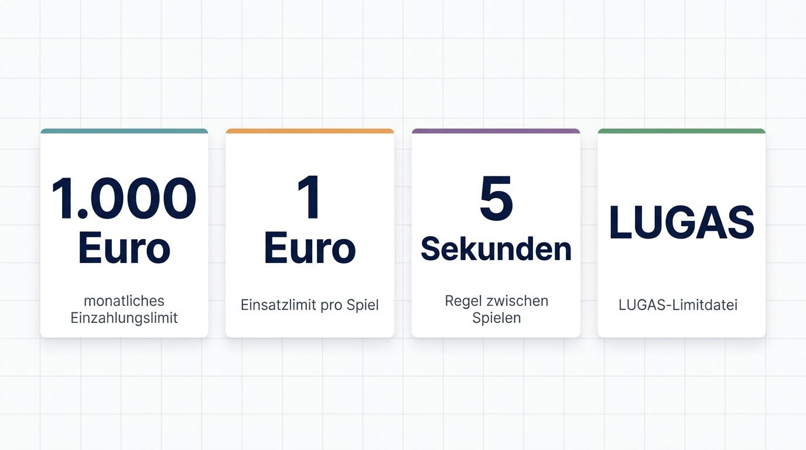
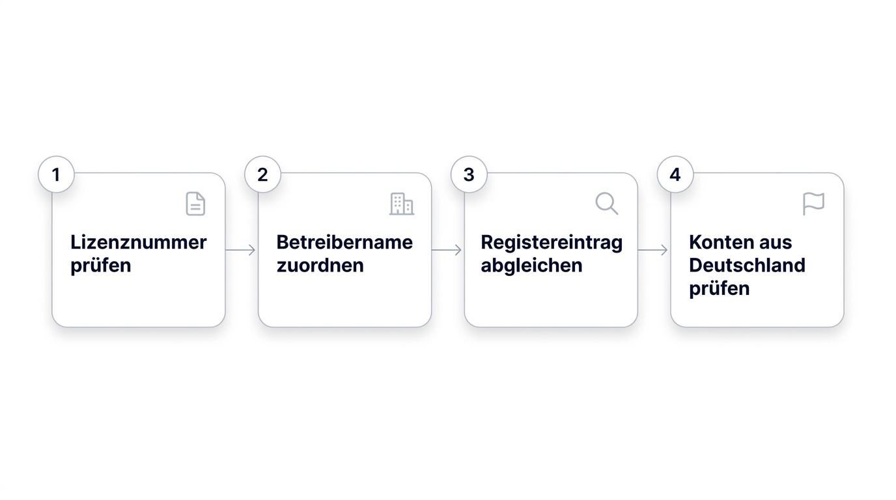
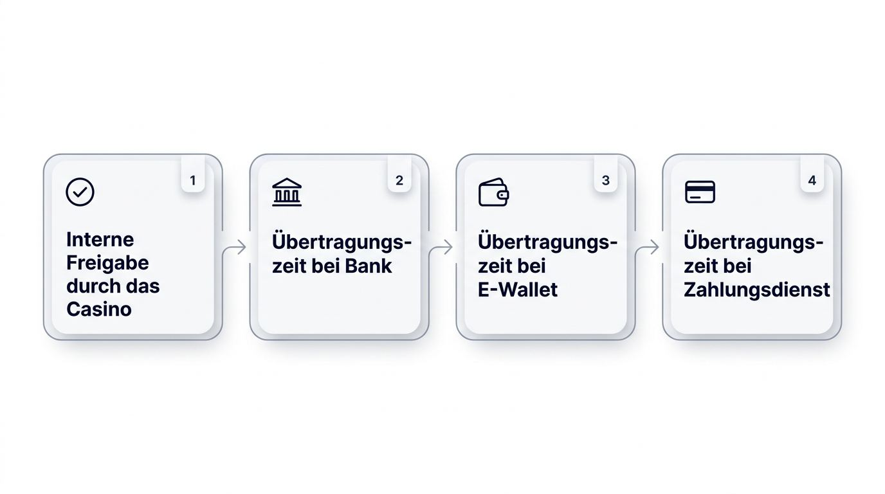
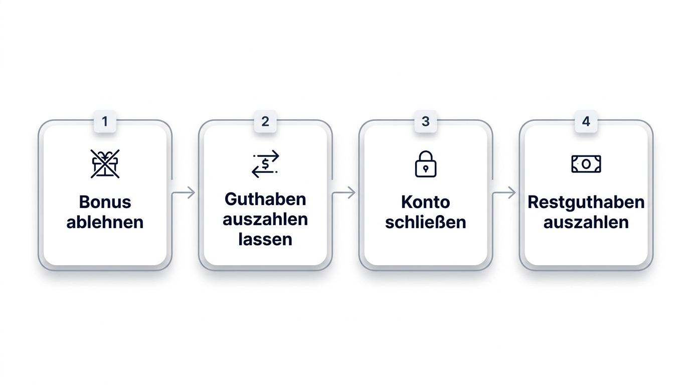
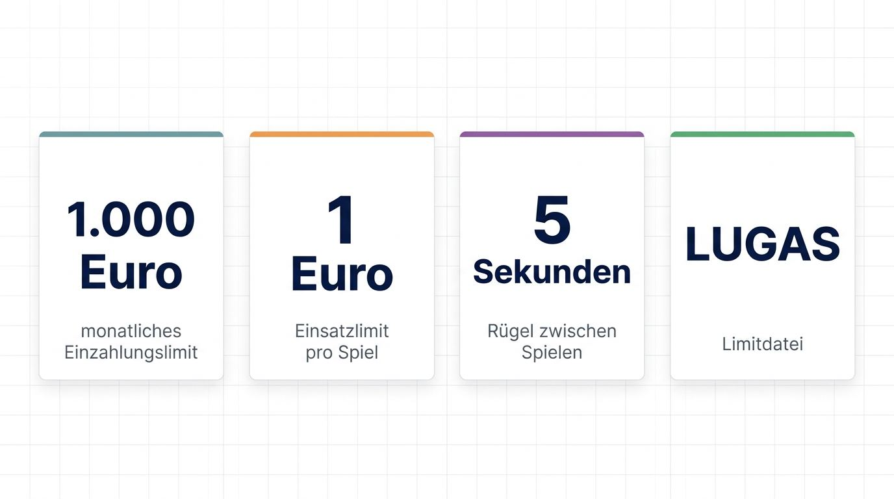

Sie wollen zwischen deutschen Angeboten und ausländischen Casinos wählen, ohne bei Auszahlung, Kontozugang oder eigenen Limits unangenehme Überraschungen zu erleben. Entscheidend sind die Bedingungen, die sich vor der Einzahlung prüfen lassen und zu Ihren Prioritäten bei Spielen, Zahlungen und Kontrolle passen.
Mehr Auswahl oder flexible Aktionen rechtfertigen kein Konto, wenn Guthaben, Verifizierung und ein möglicher Ausstieg unklar bleiben.
Nach welchen Kriterien internationale Casinos bewertet werden

Belastbare Auszahlungen, verständliche Bedingungen und überprüfbare Betreiberangaben wiegen in diesem ausländische Casinos Test stärker als ein hoch beworbener Bonus. Die Redaktion bewertet internationale Anbieter anhand eines für Deutschland angelegten Tests ausländischer Casinos. Auszahlungsnachweise, Beschwerdewege, KYC-Transparenz und ein praktikabler Ausstieg erhalten mehr Gewicht als der reine Werbewert von Promotionen.
- Lizenz und Unternehmen: Zählen nur, wenn Lizenznummer, Betreibername und Registereintrag bei der zuständigen Behörde nachvollziehbar sind.
- Auszahlungspraxis: Dokumentierte Testauszahlungen, veröffentlichte Fristen und zurechenbare Erfahrungsberichte zeigen, ob ein Anbieter Guthaben verlässlich abwickelt.
- Verifizierung: Klare Angaben zur Identitätsprüfung und zu möglichen Nachforderungen verhindern Überraschungen bei der ersten Auszahlung.
- Beschwerden und Ausstieg: Veröffentlichtes Beschwerdeverfahren, erreichbarer Support, Kontoschließung und Regeln für Restguthaben bestimmen die praktische Handhabbarkeit.
- Alltagsnutzung: Spielzugang, Zahlungswege, persönliche Limits und transparente Kontoeinstellungen ergänzen die Prüfung der besten ausländischen Online Casinos.
Lizenz und Unternehmensnachweise
Ein internationales Casino kommt erst in die engere Auswahl, wenn seine rechtliche und unternehmerische Identität unabhängig nachvollziehbar ist. Für eine Casino-Lizenz im Ausland und internationale Glücksspiellizenzen gelten dabei diese Mindestanforderungen:
- Eine sichtbare Lizenznummer muss sich dem benannten Betreiberunternehmen zuordnen lassen.
- Das Unternehmen braucht einen überprüfbaren Registereintrag beim jeweiligen Regulator.
- Das Angebot muss offenlegen, ob und unter welchen Bedingungen es Konten aus Deutschland akzeptiert.
- Ein Abgleich im Register der Malta Gaming Authority, Curaçao Gaming Authority oder Anjouan Gaming Authority wiegt stärker als ein Lizenzlogo im Seitenfuß.
- Ein Logo ohne Lizenznummer, Unternehmensname und Registertreffer genügt nicht.
Auszahlungen und Verifizierung im Vergleich

Die beobachtbare Auszahlungspraxis liefert den aussagekräftigsten Hinweis darauf, wie ein Betreiber mit Spielergeldern umgeht. Eine schnelle Casino-Auszahlung bleibt eine Werbeaussage, solange kein nachvollziehbarer Casino-Auszahlung-Test oder zurechenbare Nutzerbelege vorliegen.
- Prüfen Sie veröffentlichte Bearbeitungszeiten und dokumentierte Testauszahlungen mit Datum, Zahlungsweg und Auszahlungsbetrag.
- Achten Sie auf die KYC-Erwartungen bei der ersten Auszahlung sowie auf Hinweise zu wiederholten Dokumentennachforderungen.
- Trennen Sie die interne Freigabe durch das Casino von der anschließenden Übertragungszeit bei Bank, elektronischer Geldbörse oder Zahlungsdienst.
- Bewerten Sie nachvollziehbare Erfahrungen von Spielern höher als Versprechen über sofortige Auszahlungen.
Bedingungen für Konto und Ausstieg

Kontobedingungen zeigen ihren Wert besonders dann, wenn Sie einen Bonus ablehnen, Guthaben auszahlen lassen oder das Konto schließen möchten. Casino-Sicherheit und Seriosität zeigen sich dabei an veröffentlichten Abläufen, die einen Ausstieg ohne vermeidbare Kontoreibung ermöglichen.
- Bonusrestriktionen und die Möglichkeit zum Bonusverzicht müssen verständlich beschrieben sein.
- Der Kundendienst sollte über klar benannte Kontaktwege erreichbar sein.
- Die Kontoschließung braucht einen veröffentlichten, praktikablen Ablauf.
- Restguthaben sollte nach den veröffentlichten Regeln auch bei Schließung oder Bonusverzicht ausgezahlt werden können.
Der deutsche Markt- und Zugangsrahmen bestimmt unabhängig davon die praktische Nutzbarkeit.
Rechtslage für ausländische Casinos in Deutschland

Für Angebote an Spieler in Deutschland bildet der Glücksspielstaatsvertrag 2021 den maßgeblichen Rahmen. Die Gemeinsame Glücksspielbehörde der Länder veröffentlicht eine Whitelist der für den deutschen Markt erlaubten Anbieter. Allein anhand einer internationalen Lizenz lässt sich daher nicht beantworten, ob ein Online-Angebot Deutschland bedienen darf.
Casinos ohne deutsche Lizenz können Konten aus Deutschland technisch zulassen, ablehnen oder nachträglich über Standortprüfungen beschränken. Aussagen auf Casino-Websites über eine angebliche Zugänglichkeit ersetzen keine bestätigte deutsche Registerinformation. Geoblocking und Standortprüfungen können Registrierung, Spielen, Einzahlung, Auszahlung und die weitere Kontonutzung beeinflussen.
Bei deutschen lizenzierten Online-Slot-Angeboten gelten im Alltag das 1-Euro-Einsatzlimit pro Spiel, die Fünf-Sekunden-Regel und ein anbieterübergreifendes monatliches Einzahlungslimit von 1.000 Euro. Die LUGAS-Limitdatei unterstützt die zentrale Kontrolle dieses Limits. Das OASIS-Spielersperrsystem prüft Sperren anbieterübergreifend bei deutschen Lizenzangeboten. Internationale Casinos sind typischerweise nicht an diese deutschen Systeme angeschlossen.
Der Tätigkeitsbericht 2024 der GGL dokumentiert Genehmigungen, beaufsichtigte Angebote und Untersagungsverfahren. Für die steuerliche Behandlung von Casinogewinnen sollten Sie aktuelle Informationen deutscher Behörden oder eine steuerliche Beratung heranziehen, statt allgemeine Aussagen von Casino-Websites zu übernehmen.
Prüfen Sie vor einer Registrierung insbesondere folgende Punkte:
- Vergleichen Sie den Betreiber mit der aktuellen GGL-Whitelist und lesen Sie die dortige Erlaubnisform.
- Kontrollieren Sie, ob Standortvorgaben in den Allgemeinen Geschäftsbedingungen auch Auszahlungen betreffen.
- Prüfen Sie, welche Zahlungsarten für Konten in Deutschland tatsächlich freigeschaltet sind.
- Lesen Sie die Beschwerde- und Streitregelung, bevor Sie einzahlen.
- Behandeln Sie Informationen zu Online Casinos Schweiz, Schweizer Spielern oder dem österreichischen Glücksspielmonopol nur als Marktvergleich. Sie beantworten weder die Rechtslage noch den Zugang für Deutschland.
Internationale Lizenzen und Vertrauenssignale
Eine Lizenzprüfung beginnt mit dem Registereintrag und setzt sich mit Betreiberbelegen, Prüfungsergebnissen, Angaben zur Geldhandhabung und Beschwerdewegen fort. Internationale Lizenzjurisdiktionen unterscheiden sich bei Registerzugang, Aufsicht, Auditpraxis, Vorgaben für Spielergelder und Eskalationswegen. Sichere ausländische Online Casinos weisen mehrere dieser Informationen nachvollziehbar aus.
Keine Lizenz garantiert eine schnelle Auszahlung, faire Behandlung im Einzelfall oder einen erfolgreichen Beschwerdeausgang. Entscheidend bleiben die überprüfbare Betreiberpraxis, die Durchsetzungshistorie und die Transparenz zu Spielen und Konten.
Lizenzbehörden richtig prüfen
Ein Registereintrag bei der zuständigen Behörde liefert belastbarere Informationen als ein Lizenzabzeichen im Seitenfuß. Seriöse ausländische Casinos ermöglichen den Abgleich von Lizenznummer und Betreibername über die offizielle Stelle. Bei der früheren Curaçao-Struktur aus Master- und Sublizenzen wurden die Regeln modernisiert, weshalb aktuelle Registerdaten wichtiger sind als ältere Lizenzbeschreibungen.
| Prüffaktor | Malta Gaming Authority (MGA) | Curaçao Gaming Authority (CGA) | Anjouan Gaming Authority | UK Gambling Commission (UKGC) |
|---|---|---|---|---|
| Lizenznummer | Im Casino und im Register abgleichen | Aktuelle Nummer mit Registerdaten abgleichen | Nummer und Unternehmensbezug prüfen | Nummer im offiziellen Register prüfen |
| Registerzugang | Offizielle Suche der Malta Gaming Authority | Offizieller Registerabgleich der Curaçao Gaming Authority | Zuständige Registerinformation prüfen | Öffentliches Register der Gambling Commission |
| Betreibername | Muss mit der Casino-Angabe übereinstimmen | Muss mit aktueller Lizenzzuordnung übereinstimmen | Gesellschaft und Lizenzinhaber abgleichen | Gesellschaft und zugelassene Tätigkeiten abgleichen |
| Öffentliche Maßnahmen | Register und Mitteilungen der Behörde prüfen | Aktuelle Behördeninformationen berücksichtigen | Veröffentlichte Maßnahmen recherchieren | Öffentliche Maßnahmen und Lizenzstatus prüfen |
| Beschwerdekontakt | Zuständigen Kontakt der Behörde prüfen | Beschwerdeweg des Lizenzinhabers prüfen | Kontaktweg und Verfahren prüfen | Relevant für zugelassene Zielmärkte, nicht als Standard für Deutschland |
Die UK Gambling Commission ist für Betreiber relevant, die berechtigte Märkte im Vereinigten Königreich bedienen. Sie stellt keine deutsche Standardoption dar. Bei internationalen Casinos sind Register, Unternehmensdaten und öffentliche Behördeninformationen maßgeblich.
Signale jenseits des Lizenznamens
Glaubwürdigkeit entsteht durch mehrere nachvollziehbare Spuren aus dem laufenden Betrieb eines Casinos. Vor allem datierte und zurechenbare Hinweise helfen bei der Einschätzung von Casino-Sicherheit und Seriosität.
- Prüfen Sie, ob Beschwerden nachvollziehbar beantwortet werden und ob öffentliche Durchsetzungsmaßnahmen gegen den Betreiber vorliegen.
- Achten Sie auf veröffentlichte RTP-Werte. RTP bezeichnet die theoretische langfristige Auszahlungsquote eines Spiels und sollte, soweit verfügbar, auf Spielebene geprüft werden.
- Lesen Sie Community-Berichte nur mit erkennbarer Zeitangabe, konkretem Zahlungsweg und nachvollziehbarem Vorgang.
- Kontrollieren Sie Impressum, Unternehmensanschrift, Kontaktkanäle und Verantwortlichkeiten des Betreibers.
- Große Spielkataloge, SSL-Verschlüsselung und ein einzelner Lizenzname reichen ohne weitere Belege nicht aus.
Prüfungen, Spielergelder und Beschwerden
Unabhängige Spieltests, Angaben zur Behandlung von Spielergeldern und ein klarer Eskalationsweg machen offene Fairness- und Zahlungsfragen vor der Einzahlung prüfbar. Diese Nachweise erleichtern die Einordnung, garantieren jedoch keinen bestimmten Ausgang einer Beschwerde.
- Prüfen Sie aktuelle Zertifikate von Teststellen wie eCOGRA oder iTech Labs und achten Sie auf den Bezug zu den angebotenen Spielen.
- Suchen Sie nach Angaben zur Trennung von Spielergeldern und Betriebskapital, da diese Information für die Einschätzung von Einzahlungen bei einer Insolvenz relevant ist.
- Kontrollieren Sie, ob ein Beschwerdeverfahren mit Fristen, Ansprechpartnern und einer externen Eskalationsstelle veröffentlicht ist.
- Prüfen Sie, ob der Betreiber Kontaktangaben zu Regulator, Ombudsstelle oder Schlichtungsverfahren nennt.
Wann internationale Casinos besser passen können
Die Vor- und Nachteile ausländischer Casinos hängen davon ab, welches Kontrollniveau Sie im Alltag bevorzugen. Internationale Bedingungen können mehr Spielraum bei Konten bieten, verlangen jedoch eine bewusst gesetzte persönliche Grenze. Deutsche Lizenzangebote bündeln dagegen bestimmte Kontrollen über zentrale Systeme.
Flexiblere Casino-Bedingungen
Flexible Bedingungen sind ein sinnvolles Auswahlkriterium, wenn ein Betreiber seine Kontoeinstellungen und Regeln offenlegt. Bei internationalen Angeboten können Casino-Limits und Sperren auf Betreiberbasis höher ausfallen oder ein deutsches anbieterübergreifendes Limitmanagement fehlt.
Einige internationale Casinos bieten unterschiedliche Casinoformate, breiter angelegte Promotionsstrukturen und weniger zentralisierte Aktivitätsüberwachung als das LUGAS-verbundene Umfeld deutscher Lizenzangebote. Setzen Sie vor Spielbeginn eine feste Ausgabenobergrenze und prüfen Sie, ob der Betreiber eigene Limits verständlich umsetzt. Diese Form der Flexibilität passt nur, wenn Sie Ihre Kontosteuerung aktiv übernehmen möchten.
Wann zentrale deutsche Einstellungen besser passen
Gemeinsame Einzahlungslimitverwaltung, anbieterübergreifende Sperrprüfungen und strukturierte Unterbrechungen können für Sie im Alltag wichtiger sein als zusätzliche Kontofreiheit. Bei deutschen lizenzierten Angeboten nutzt OASIS anbieterübergreifende Sperrprüfungen, während zentrale Limitverwaltung die Konten über mehrere Anbieter hinweg berücksichtigt.
Eine aktive OASIS-Sperre sollten Sie auch bei internationalen Angeboten beachten. Nutzen Sie interne Sperren, externe Beratungsangebote und eine konsequente Spielpause. Wer zentrale Kontrollen bevorzugt, sollte diese Funktionen als festen Teil der eigenen Kontoverwaltung berücksichtigen.
Casino-Spiele und besondere Funktionen
Prüfen Sie die Spielverfügbarkeit vor einer Einzahlung, denn Katalogzugang, Einsatzbereiche, Spielanbieter und Funktionen können für Konten aus Deutschland abweichen. Ein Casino im Ausland bietet nur dann einen praktischen Vorteil, wenn die gewünschten Casino-Spiele nach der Standortprüfung tatsächlich erreichbar sind.
Slots und Jackpot-Spiele
Ein überzeugendes Angebot an Slots verbindet Auswahl mit überprüfbaren Angaben zu Volatilität, RTP und Jackpot-Regeln. Die Zahl der Titel allein sagt wenig über die Nutzbarkeit für Ihr Konto aus.
- Prüfen Sie, welche Spielanbieter und Slots für Konten aus Deutschland freigeschaltet sind.
- Achten Sie auf veröffentlichte Angaben zur Volatilität und zum RTP des konkreten Spiels.
- Kontrollieren Sie bei progressiven Jackpots die Teilnahmebedingungen, verfügbaren Einsätze und den tatsächlichen Zugriff aus Deutschland.
- Beurteilen Sie einen großen Katalog nur zusammen mit nachvollziehbaren Spielinformationen.
Live Casino und Tischspiele
Der Nutzen von Live-Casino-Angeboten und Tischspielen online hängt von den tatsächlich freigeschalteten Varianten, sichtbaren Einsatzspannen und dem bestätigten Zugang zum jeweiligen Anbieter ab. Gerade bei einem Live Casino im Ausland können sich Tische und Limits für Konten aus Deutschland ändern.
- Prüfen Sie, ob Live-Dealer-Tische und die gewünschten Varianten von Roulette, Blackjack oder Baccarat erreichbar sind.
- Kontrollieren Sie Mindest- und Höchsteinsätze vor der Teilnahme im Kassen- oder Spielbereich.
- Bestätigen Sie den Zugang zu einzelnen Live-Providern für Ihr Konto aus Deutschland.
- Bewerten Sie Spielvarianten getrennt von Boni und Werbeaktionen.
Gamification und Casino-Missionen
Casino-Gamification kann Spieltempo und Ausgaben beeinflussen, wenn Missionen oder zeitlich begrenzte Ziele zusätzliche Einsätze nahelegen. Casino-Missionen und Challenges haben nur einen nachvollziehbaren Wert, wenn Regeln, Kosten und Belohnungen vor der Teilnahme offenliegen.
- Prüfen Sie, ob Coins, Fortschrittsstufen oder Belohnungen eine aktive Anmeldung erfordern.
- Lesen Sie die Bedingungen für Freispiele, Bonusguthaben oder andere Prämien.
- Bewerten Sie, ob die Belohnung innerhalb Ihres festen Budgets erreichbar bleibt.
- Überspringen Sie Ziele, die durch Fristen oder erforderliche Einsätze Druck erzeugen.
Boni und laufende Belohnungen
Ein Casino-Bonus ohne deutsche Lizenz erhält seinen praktischen Wert durch erfüllbare Bedingungen und ein festes Unterhaltungsbudget. Die beworbene Höchstsumme lässt ohne Umsatz-, Einsatz- und Auszahlungsregeln keinen Schluss auf den nutzbaren Wert zu. Prüfen Sie Boni daher zuerst beim Einstieg, anschließend bei laufenden Belohnungen und zuletzt anhand der Einschränkungen.
Willkommensboni und Freispiele
Ein Willkommensbonus, Freispiele, Angebote ohne Einzahlung und Bonuscodes lassen sich nur über die jeweilige Verpflichtung vergleichen. Prüfen Sie die Regeln vor einer Einzahlung, statt die beworbene Summe als Entscheidungsgrundlage zu nutzen.
- Ein Einzahlungsbonus bindet den Wert häufig an eine Mindesteinzahlung und weitere Umsatzvorgaben.
- Freispiele können auf bestimmte Slots beschränkt sein und zusätzliche Umsatzbedingungen auslösen.
- Ein Angebot ohne Einzahlung kann Auszahlungsobergrenzen oder eine vorherige Verifizierung vorsehen.
- Bonuscodes benötigen teils eine gesonderte Aktivierung oder gelten nur innerhalb eines festgelegten Zeitraums.
Cashback und VIP-Belohnungen
Ein Cashback-Bonus und ein VIP-Programm im Casino sind nur belastbar, wenn Berechnungsbasis, Auszahlungsregeln und Stufenkriterien veröffentlicht sind. Cashback kann sich auf Verluste, Nettoverluste oder einzelne Spielkategorien beziehen.
- Prüfen Sie die veröffentlichte Definition, nach der das Cashback berechnet wird.
- Kontrollieren Sie, ob Cashback erneut umgesetzt werden muss oder direkt auszahlbar ist.
- Lesen Sie die Kriterien für VIP-Stufen und die konkreten Vorteile jeder Stufe.
- Trennen Sie garantierte Leistungen mit festen Regeln von Angeboten, die der Betreiber nach eigenem Ermessen ändert.
Umsatzbedingungen realistisch bewerten
Ein Bonus sollte Ihre Auswahl nur beeinflussen, wenn er in Ihr vorher festgelegtes Unterhaltungsbudget passt. Umsatzbedingungen bezeichnen den erforderlichen Umsatz, bevor bonusbezogene Gewinne ausgezahlt werden können.
- Prüfen Sie zuerst die Umsatzpflicht für den Einzahlungsbetrag, den Bonus oder beide Beträge.
- Lesen Sie die Regeln zum Maximaleinsatz, da ein zu hoher Einsatz den Bonuswert mindern oder aufheben kann.
- Kontrollieren Sie die Spielbeiträge, denn Slots, Tischspiele und Live-Angebote können unterschiedlich angerechnet werden.
- Beachten Sie Ablaufzeiten, damit die Umsatzbedingungen für den Bonus realistisch erfüllbar bleiben.
- Prüfen Sie maximale Auszahlungen, weil diese den auszahlbaren Wert trotz erfüllter Regeln begrenzen können.
Wählen Sie anschließend einen Zahlungsweg, der Ein- und Auszahlung unter denselben klaren Bedingungen ermöglicht.
Einzahlungen, Auszahlungen und Verifizierung
Casino-Zahlungsmethoden eignen sich nur, wenn sie für Ein- und Auszahlung verfügbar sind und Gebühren, Limits, Verifizierung sowie Transaktionsnachweise transparent ausweisen. Die aktuelle Nutzbarkeit hängt vom Betreiber, Ihrer Bank, dem Verifizierungsstatus und dem Zahlungsdienst ab.
Aktuelle Zahlungsmethoden für Deutschland
Vergleichen Sie Zahlungswege nach realer Verfügbarkeit, Kosten, Geschwindigkeit, Limits, Rückbuchbarkeit und Kontrolle über Ihr Budget. Ein Logo im Kassenbereich genügt nicht, besonders wenn Betreiber ältere Verfahren weiter aufführen.
| Zahlungsmethode | Verfügbarkeit und Geschwindigkeit | Gebühren und Limits | Rückbuchbarkeit und Kontrolle |
|---|---|---|---|
| Trustly und Klarna Pay Now | Betreiber-, bank- und kontobezogen prüfen | Gebühren und Betragsgrenzen vorab prüfen | Bankbelege und klare Kontoumsätze erleichtern die Dokumentation |
| SEPA-Echtzeitüberweisung | Euro-Überweisung in Echtzeit, soweit Bank und Betreiber sie unterstützen | Bank- und Betreiberbedingungen können abweichen | Nachvollziehbare Überweisungsreferenzen unterstützen die Kontrolle |
| Karten | Ein- und Auszahlung können unterschiedlich verfügbar sein | Kartenanbieter und Casino können Limits vorgeben | Rückbuchungsregeln hängen vom Kartenanbieter und Vorgang ab |
| Skrill und Neteller | Elektronische Geldbörsen nur bei bestätigter Konto-Freischaltung nutzen | Gebühren und Auszahlungslimits prüfen | Transaktionsverlauf der Geldbörse sichern |
| Paysafecard | Häufig für Einzahlungen beworben, Auszahlungen gesondert prüfen | Vorab auf Gebühren und Restguthaben achten | Geringere Rückverfolgbarkeit als bei einer Banküberweisung kann Streit erschweren |
| Kryptowährungen im Casino, etwa Bitcoin | Bedingungen für Ein- und Auszahlung tagesaktuell prüfen | Kursschwankungen und Umrechnungsentgelte berücksichtigen | Keine übliche Rückbuchbarkeit, Transaktionsdaten sorgfältig sichern |
Giropay-Nennungen sollten Sie wegen der Ende 2024 erfolgten Einstellung oder starken Zurückdrängung mit einem aktuellen Datum prüfen. Wero ist eine von der European Payments Initiative entwickelte europäische Sofortzahlungslösung, deren Casino-Einbindung jeweils konkret bestätigt werden muss.
Bearbeitungszeit und Auszahlungsnachweise
Eine behauptete schnelle Casino-Auszahlung ist nur aussagekräftig, wenn der Betreiber Wartephasen, Freigaberegeln und methodenspezifische Zeitfenster veröffentlicht. Die Casino-Auszahlung-Dauer setzt sich aus der internen Prüfung und dem anschließenden Transfer zusammen.
- Prüfen Sie Regeln zur Wartephase, in der ein Auszahlungsauftrag noch geändert oder storniert werden kann.
- Vergleichen Sie die veröffentlichte Bearbeitungszeit des Casinos mit der Transferzeit von Bank, Karte, Geldbörse oder Blockchain.
- Kontrollieren Sie Auszahlungslimits pro Vorgang, Tag oder Zeitraum.
- Gewichten Sie einen dokumentierten Casino-Auszahlung-Test mit Datum, Betrag und Zahlungsweg höher als Aussagen über sofortige Auszahlungen.
- Rechnen Sie bei der ersten Auszahlung mit möglichen zusätzlichen Dokumentenanforderungen, auch wenn der Transferweg technisch schnell arbeitet.
KYC und Umgang mit Kundendaten
KYC im Online Casino, also die Identitätsprüfung, sollten Sie vor der ersten Einzahlung oder Auszahlung verstehen. Eine transparente Casino-Verifizierung nennt Anforderungen, Bearbeitungszeit und Umgang mit Kundendaten.
- Typische KYC-Unterlagen sind ein Identitätsnachweis und ein Adressnachweis.
- Bei höheren oder auffälligen Transaktionen können AML-Prüfungen zusätzliche Herkunftsnachweise verlangen. AML bezeichnet Maßnahmen zur Geldwäscheprävention.
- Prüfen Sie veröffentlichte Fristen für die Dokumentenprüfung und mögliche Nachforderungen.
- Lesen Sie die Datenschutzerklärung zu Speicherung, Weitergabe und Löschung Ihrer Daten.
- Behandeln Sie Aussagen über ein Casino ohne Verifizierung nicht als Qualitätsmerkmal, wenn die späteren Anforderungen unklar bleiben.
Währungskosten und Zahlungsnachweise
Währungsumrechnung bei Casino-Einzahlungen kann eine bequeme Methode verteuern und einen späteren Zahlungsstreit erschweren. Das gilt auch bei Konten, die Zahlungen in CHF oder anderen Währungen abwickeln.
- Prüfen Sie, ob Ihr Spielkonto und der Auszahlungsweg in Euro geführt werden.
- Kontrollieren Sie Wechselkursangaben und Umrechnungsentgelte bei Ein- und Auszahlung.
- Bewahren Sie Einzahlungs- und Auszahlungsbestätigungen, Kontoauszüge und Transaktionsreferenzen auf.
- Sichern Sie die schriftliche Kommunikation mit dem Kundendienst zu offenen Zahlungen.
Diese Unterlagen unterstützen sowohl Ihre eigene Ausgabenkontrolle als auch die nachvollziehbare Klärung eines Zahlungsstreits.
Tools für verantwortungsvolles Spielen
Spielerschutz bei ausländischen Casinos hängt auch von freiwilligen Kontofunktionen ab, die Sie vor dem Spielen aktiv setzen können. Seriöse internationale Betreiber sollten Limits, Pausen und interne Sperrlisten verständlich anbieten, auch ohne Anbindung an deutsche Zentraldateien.
Freiwillige Limits und Zeitkontrollen
Wirksame Casino-Limits und Sperren sollten vor der ersten Spielrunde verfügbar sein und zu Ihrem festen Unterhaltungsbudget passen. Setzen Sie Grenzen vor der ersten Spielrunde, nicht erst nach Verlusten oder mit dem Ziel, frühere Einsätze zurückzugewinnen.
- Legen Sie ein Einzahlungslimit für den gewünschten Zeitraum fest.
- Prüfen Sie Verlust- und Einsatzlimits für einzelne Spielrunden oder Sitzungen.
- Aktivieren Sie Session-Erinnerungen und zeitlich begrenzte Spielpausen.
- Nutzen Sie die Support- und Beratungsinformationen des Betreibers, wenn Sie Ihr Spielverhalten prüfen möchten.
Selbstsperre und Kontoschließung
Ein transparenter Ablauf für Selbstsperre und Kontoschließung zeigt, ob ein Betreiber einen praktikablen Ausstieg ermöglicht. Prüfen Sie diese Regeln vor der Registrierung, ebenso wie mögliche Folgen von Casino-Geoblocking.
- Kontrollieren Sie Dauer und Aktivierung einer betreiberinternen Selbstsperre.
- Prüfen Sie, ob der Betreiber interne Sperrlisten führt und den Support während einer Schließung erreichbar hält.
- Lesen Sie die Regeln zur Auszahlung verbleibender Guthaben bei Kontoschließung.
- Unterscheiden Sie die interne Sperre klar vom deutschen OASIS-Register, denn sie gilt nicht automatisch anbieterübergreifend.
Eigenverantwortung bei weniger zentraler Kontrolle
Weniger zentrale Überwachung verlangt persönliche Grenzen, die Sie vor dem Spielen festlegen. Verantwortungsvolles Spielen beginnt mit einem klaren Budget, einem Zeitrahmen und einem eindeutigen Einzahlungsstopp.
- Bestimmen Sie vorab den Höchstbetrag und die maximale Dauer einer Sitzung.
- Erhöhen Sie Einzahlungen nach Verlusten nicht, sondern beenden Sie die Sitzung oder legen Sie eine Pause ein.
- Ignorieren Sie Bonusfristen und gamifizierte Ziele, wenn sie Ihr Zeit- oder Budgetlimit überschreiten würden.
- Nutzen Sie Limits und Selbstsperren sofort, wenn die eigenen Regeln nicht mehr eingehalten werden.
Häufige Fragen zu ausländischen Casinos
Kann ich mit einem VPN auf ausländische Casinos zugreifen?
Ein VPN für ausländische Casinos setzt Standortprüfungen und Betreiberbedingungen nicht verlässlich außer Kraft. Abweichende Standortdaten können zu Kontoeinschränkungen, zusätzlicher Prüfung oder Konflikten bei einer Auszahlung führen.
Was sollte ich tun, wenn ein Casino Giropay als Zahlungsmethode nennt?
Prüfen Sie die Giropay-Angabe mit aktuellem Datum im Kassenbereich und beim Kundendienst. Wegen der Einstellung oder starken Zurückdrängung Ende 2024 kann ein Logo auf veralteten Zahlungsinformationen beruhen.
Ist Wero derzeit für Einzahlungen oder Auszahlungen verfügbar?
Die Wero-Verfügbarkeit müssen Sie beim konkreten Betreiber und Zahlungsdienst aktuell bestätigen. Prüfen Sie den Kassenbereich sowie die Auszahlungsbedingungen, bevor Sie Wero als Zahlungsweg einplanen.
Was passiert mit meinem Guthaben nach einer Standortprüfung?
Die Betreiberbedingungen und die konkrete Kontoprüfung bestimmen den weiteren Umgang mit Ihrem Guthaben. Fordern Sie bei Einschränkungen eine schriftliche Entscheidung, den dokumentierten Guthabenstatus und Informationen zum Auszahlungsweg an.
Melden internationale Casinos Spielaktivitäten an LUGAS?
Internationale Casinos sind nicht automatisch an LUGAS angebunden. Prüfen Sie bei einem konkreten Betreiber dessen Lizenzstatus und Datenschutzerklärung, wenn Sie wissen möchten, wie er Kontodaten verarbeitet.
Welche Nachweise brauche ich bei einem Auszahlungsstreit?
Sichern Sie Ein- und Auszahlungsbestätigungen, Kontoauszüge, Transaktionsreferenzen, KYC-Kommunikation, Bonusbedingungen und den vollständigen Supportverlauf. Nutzen Sie zunächst das veröffentlichte interne Beschwerdeverfahren und dokumentieren Sie jede schriftliche Entscheidung.